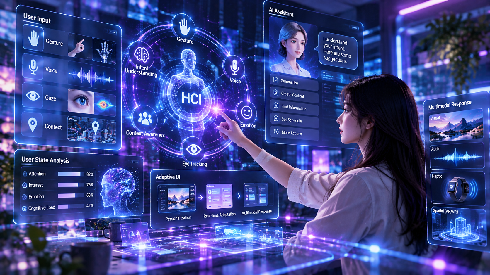
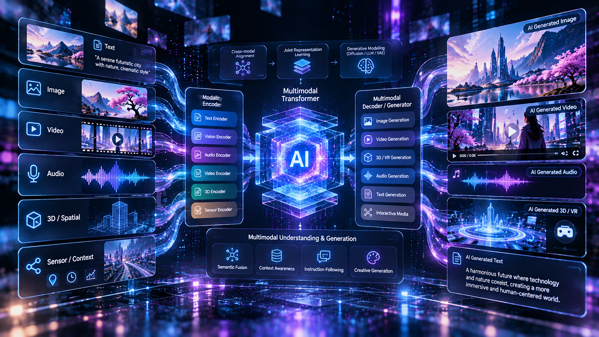
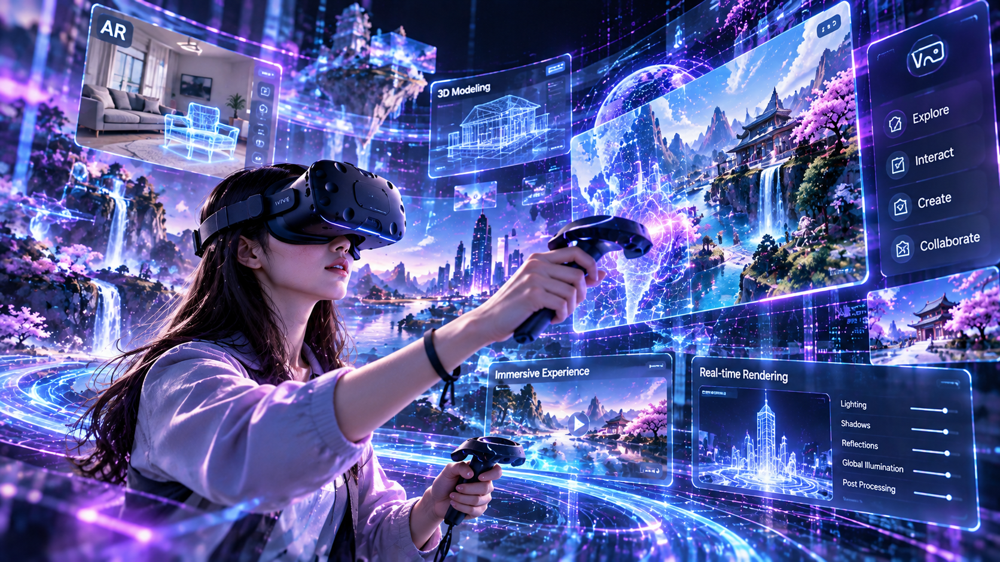

인간과 인공지능이 상호작용하는 핵심 기술을 연구합니다.

인간-컴퓨터 상호작용 및 지능형 사용자 인터페이스 기술 연구. 사용자의 의도와 맥락을 이해하고 반응하는 차세대 인터랙션 환경을 설계합니다.

인공지능 기반 응용 미디어 처리 및 멀티모달 콘텐츠 생성. 시각, 청각 등 다양한 모달리티를 융합한 AI 생성 모델 및 콘텐츠를 연구합니다.

가상/증강현실(VR/AR) 기반 몰입형 미디어 컴퓨팅 연구. 가상 공간에서의 사실적인 렌더링 및 새로운 디지털 경험 창출을 목표로 합니다.